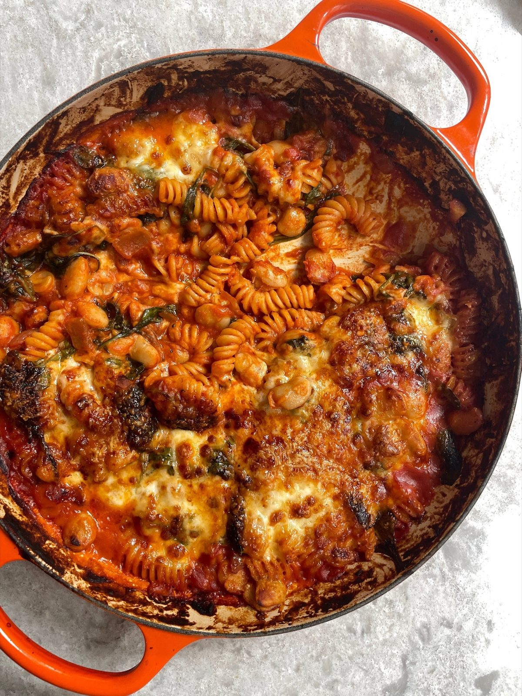

Cheesy Butter Bean, Tomato + Garlic Pasta Bake
Pasta and butter beans in a garlicky tomato sauce, baked under cheddar, mozzarella and Parmesan.

Before you start heat the oven to 210°C fan.
Ingredients
To serve
Method
Stops your screen dimming and locking while your hands are busy. It switches off when you leave this page.
- Heat the oven to 210°C fan.
- Heat the 2 tbsp olive oil in a large ovenproof pan or shallow casserole dish over a medium heat. If you do not have an ovenproof pan, use a large frying pan and transfer everything to a baking dish later.
- Add the 1 onion and cook for 8-10 minutes until starting to soften, adding a splash of water to help it along if needed.
- Meanwhile, cook the 150g pasta in salted water until just under al dente, following the packet instructions.
- Reserve a mug of the pasta water, then drain the pasta.
- Stir the 2-3 garlic cloves, 1 tbsp tomato purée and ½ tsp chilli flakes into the onion with 2 tbsp water to make a paste.
- Cook for 1-2 minutes, until fragrant and the tomato purée has deepened in colour.
- Pour in the 500ml passata and most of the basil, saving a few to garnish.
- Season with salt and a few cracks of black pepper, then simmer for 7-8 minutes, stirring occasionally, until slightly reduced.
- Stir in the 660g jar of butter beans with their liquid, the cooked pasta and the 120g spinach, if using, loosening with a little of the reserved pasta water if necessary.
- Simmer for 5-6 minutes, until the spinach wilts.
- Mash a few of the beans against the side of the pan for a creamier sauce, leaving most of them whole.
- Transfer everything to a large baking dish if you started in a frying pan.
- Top with the 50g cheddar, tear over the 125g mozzarella and scatter over the 40g Parmesan.
- Bake at 210°C fan for 10-15 minutes, until golden, bubbling and just starting to crisp on top.
- Rest for 5 minutes before serving with garlic bread and the dressed salad leaves.
Notes
- Give it a few minutes under a hot grill at the end if the top needs help crisping.
- Gluten-free pasta works fine here.
- Use a vegetarian alternative to the Parmesan if you need to.
- Good for batch cooking and meal prep; a crunchy green salad cuts through the richness.
Source: https://boldbeanco.com/blogs/beanspo-recipes/cheesy-butter-bean-tomato-garlic-pasta-bake